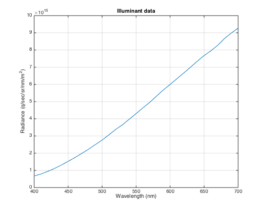
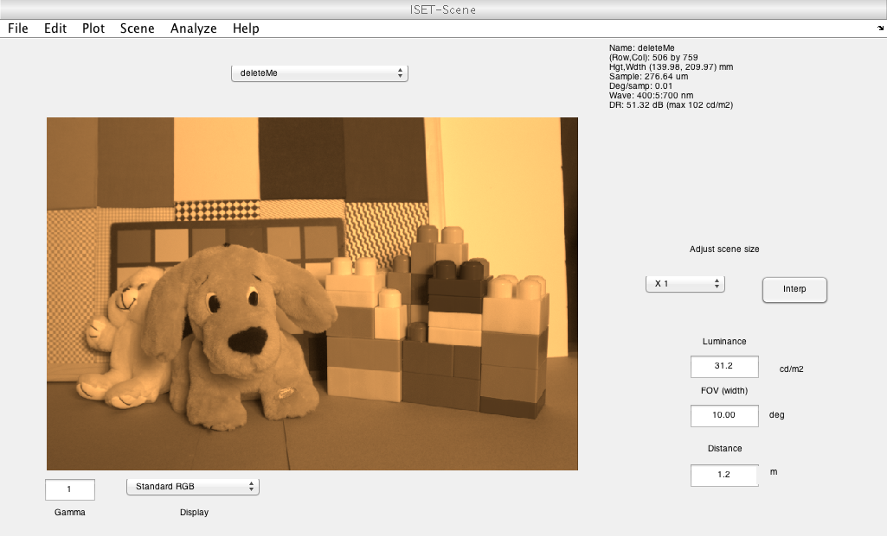
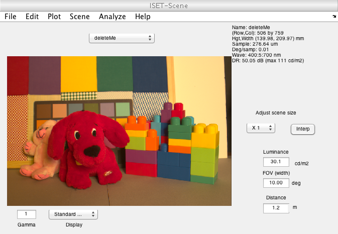

Contents
function varargout = v_sceneHCCompress(varargin)
varargout = UnitTest.runValidationRun(@ValidationFunction, nargout, varargin);
end
Here is the actual code
function ValidationFunction(runTimeParams)
Initialize
ieInit;
Read in the scene
fName = fullfile(isetRootPath,'data','images','multispectral','StuffedAnimals_tungsten-hdrs');
scene = sceneFromFile(fName,'multispectral');
UnitTest.validationData('sceneA', scene);
if (runTimeParams.generatePlots)
vcAddAndSelectObject(scene); sceneWindow;
scenePlot(scene,'illuminant photons');
end
Reading multispectral data with mcCOEF.
Saved using svd method

Compress the hypercube requiring only 95% of the var explained
vExplained = 0.95;
[imgMean, imgBasis, coef] = hcBasis(sceneGet(scene,'photons'),vExplained);
Save the data
wave = sceneGet(scene,'wave');
basis.basis = imgBasis;
basis.wave = wave;
comment = 'Compressed using hcBasis with imgMean)';
illuminant = sceneGet(scene,'illuminant');
oFile = fullfile(isetRootPath,'deleteMe.mat');
ieSaveMultiSpectralImage(oFile,coef,basis,comment,imgMean,illuminant);
read in the data
wList = 400:5:700;
scene2 = sceneFromFile(oFile ,'multispectral',[],[],wList);
if (runTimeParams.generatePlots)
vcAddAndSelectObject(scene2); sceneWindow;
end
Reading multispectral data with mcCOEF.
Saved using svd method

Now require that most of the variance be plained
vExplained = 0.99;
[imgMean, imgBasis, coef] = hcBasis(sceneGet(scene,'photons'),vExplained);
fprintf('Number of basis functions %.0f\n',size(imgBasis,2));
Number of basis functions 3
Save the data
wave = sceneGet(scene,'wave');
basis.basis = imgBasis;
basis.wave = wave;
comment = 'Compressed using hcBasis with imgMean)';
illuminant = sceneGet(scene,'illuminant');
ieSaveMultiSpectralImage(oFile,coef,basis,comment,imgMean,illuminant);
read in the data
wList = 400:5:700;
scene2 = sceneFromFile(oFile ,'multispectral',[],[],wList);
vcAddAndSelectObject(scene2); sceneWindow;
Reading multispectral data with mcCOEF.
Saved using svd method

Clean up the temporary file.
delete(oFile);
End
end